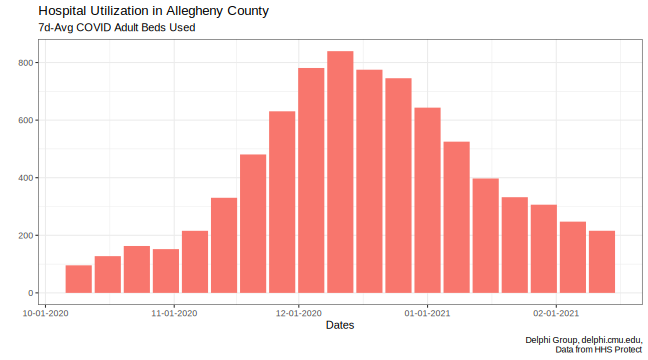
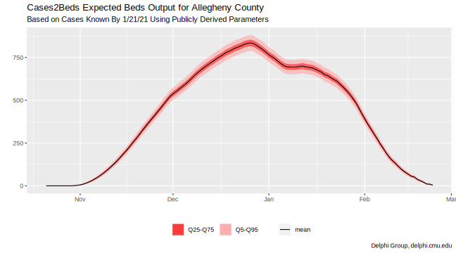
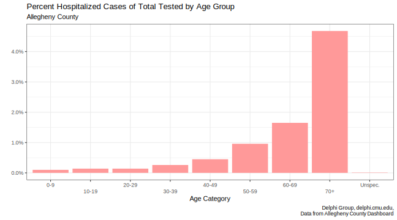
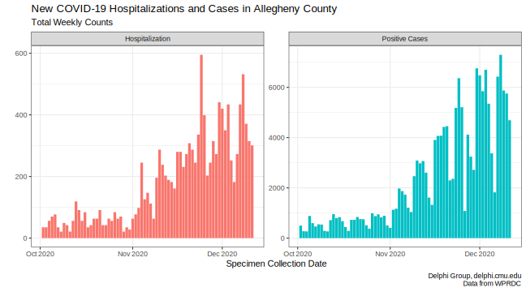

Cases2Beds: A Case Study in Actionable Intelligence Highlights
This blog post was adapted from the Delphi blog, originally published on March 10th, 2021. Again, thank you to the Allegheny County Health Department, the DELPHI Group, Chris Scott and Roni Rosenfeld.
One of the Delphi Group’s goals is to create informative tools for healthcare organizations. Tools are only useful, however, if the insights they provide can inform concrete actions. That is to say, these tools must provide actionable intelligence. To address local challenges during the pandemic, we partnered with the Allegheny County Health Department (ACHD). One of our shared worries in early November 2020, as the case rates in the region continued to increase, was if hospitals located in the county would run out of hospital beds for COVID patients (Fig 1).
 Fig. 1: Hospitalizations Due to COVID-19 and New Cases from Positive PCR Tests in Allegheny County (WPRDC Data 1)
Based on its planning, the ACHD needed at least a weeks’ time to open emergency COVID facilities. If the emergency space wasn’t open and hospital beds ran out, mortality rates could soar. But, if we didn’t need the facility, that decision would have stretched already thin resources. Many of the hospitals in Allegheny County were in contact with each other, but each hospital system only had visibility into its own facilities. We wondered if we could offer a higher-level view for ACHD to assist in its planning.
A probabilistic approach
With Cases2Beds2, we could provide intelligence at a county level.
To extrapolate beds utilization 1-2 weeks in the future, we needed to estimate:
- The probability that a person who tested positive for COVID-19 would require hospitalization
- How many days after testing a person would be hospitalized
- How long a person with COVID would stay in the hospital
- The current number of positive COVID tests
These values vary by demographic factors, most notably age (Fig 2), and to a lesser extent, sex and race.
 Fig. 2: Age Group Comparisons based on the Allegheny County COVID-19 Tableau 3
We used public data from Allegheny County about the number of people tested, test positivity rate, and hospitalization rate, broken down by the aforementioned demographic factors.
We also acquired information for two critical parameters: offset and length of stay. Offset is the number of days between the day of testing (called specimen collection date) and the first day of hospitalization. For example, if the test date is around the hospital admit date, the offset would be 0 days (or sometimes -1 or +1 days). Otherwise, if the test date was 5 days before hospitalization, the offset would be 5 days. Notably, the offset can be negative, meaning a person may have been tested some days or weeks after being admitted (presumably for an unrelated reason).
The length of stay is approximately how many days a person uses a bed in the hospital (± 1 day).
Given the hospitalization rate, the offset distribution, and the length of stay distribution, we could simulate multiple futures for any given set of positive cases and their testing dates. This process ultimately shows the distribution of the number of beds needed each day.
Estimating the future given a set of probabilities is a common problem and is possible with an approach called a Monte Carlo simulation.
The logistics of actionable intelligence
Monte Carlo simulations involve running a huge number of scenarios based on a set of probabilities. The more scenarios run, the more accurate the model tends to be. For example, if you gave 1000 people one dart to throw at a dart board, even though each individual throw may not be very good, you’d still be able to get a pretty good idea of where the bull’s eye is after 1000 throws. This is the same principle we applied for Cases2Beds – after many simulations, we had a good idea of how many beds might be needed in the next two weeks.
Our prototype Monte Carlo simulation was written in Python and completed in minutes. However, because the simulation works best with probabilities derived from PHI, ACHD needed to run it privately and offline so there would be no data transmission. Thus, any type of web-application (which would transmit data to our servers) was ruled out. Even asking ACHD to run our Python software on their machines fell into a legal grey area. However, Microsoft Excel was easy to use and supported by ACHD. So we converted Cases2Beds into a spreadsheet.
It is relatively straight-forward to port the Python application to VBScript macros for Microsoft Excel. Those macros, however, aren’t designed to run large simulations and we saw that the time required to generate a model was far, far worse, bordering on unusable.
As an alternative, we developed an analytical model for Microsoft Excel that offered a much faster run time compared to full Monte Carlo simulation.
The analytical model had the same idea as the Monte Carlo simulation. Some fraction of individuals who test positive today will be hospitalized after a varying offset (from test date to admit date) and variable duration (from admit date to discharge date) based on their characteristics. In the spreadsheet, anyone can (and should) change these parameters to fit their region.
The characteristics are:
- Age Group: (Most important) [unspecified, 0-9, 10-19, 20-29 … 70-79, 80+]
- Sex: [unspecified, M, F]
- Race: [unspecified, Black, White, Hispanic, Asian]
And the parameters are:
- Hospitalization Rate
- Offset Distribution Parameter Set: Parameters describing the number of days before someone who tests positive is hospitalized
- Duration Distribution Parameter Set: Parameters describing the number of days someone will be in the hospital
The second types of inputs are the daily positive cases split by their traits. This is the input that the user actively changes on their end.
Behind the scenes, we take these parameters (first input) and generate Offset Fractions, which is the probability that a patient with given traits will occupy a bed on k days after the specimen testing date. These Offset Fractions and the daily positive case breakdown (second input) give us the expected mean and variance up to 1 month in the future of the number of patients in the hospital per day based on the cases already seen. This information can be used to generate plots like Fig 3. This graph isn’t to suggest that there won’t be any need for beds after February! It is just that based on the cases we know, very few people will remain hospitalized after a month.
 Fig. 3: Output of Cases2Beds using historical data until January 21st for Allegheny County Using Public Parameters
If we assume independence between patients, the mean and variance calculations are exact. However, our quantile estimates are based on approximating the sum of independent binary variables, which is inaccurate near the tails. So the accuracy of the more extreme quantiles (95%+) depends on the number of cases present, which in practice makes them less trustworthy.
The only constant during the pandemic is change
By November 2020, we had a prototype Cases2Beds spreadsheet for ACHD that they used. Over the following months, we made various modifications with their feedback. For example, the ACHD staff did not have time to input the case numbers. So, we were able to use the granular public data to give them estimates of future hospital utilization without any inputs on their end. We were also able to showcase the spreadsheet to other health departments and hospitals by generating public parameters for offset and length of stay from different national public resources, like the Florida line-level COVID dataset 4. Based on these users’ feedback, we started to use Cases2Beds as an input to hospital utilization forecasting models. Other inputs included current hospital bed utilization (from HHS Protect 5), how long current patients are likely to continue to be hospitalized, and how many new cases there will be in the near future. A preliminary evaluation of such a method shows decent predictive power when parameters are tailored to a location.
At the peak of bed utilization, hospital systems themselves increased their COVID beds utilization to 6x more than in October 2020. Fortunately, in Allegheny County, we never reached a point where demand for beds exceeded a somewhat elastic supply. By early January, multiple organizations told us that the pandemic’s most acute problem had changed to vaccine distribution and the number of COVID-19 beds needed dropped. Cases2Beds continues to act as an early warning system if the number of cases rise quickly.
 Fig. 4: Numbers of staffed COVID beds over time vs. capacity from the HHS Protect Data 5.
Finale
Cases2Beds was a case study about the realities of research institutions offering actionable intelligence in healthcare. While the Cases2Beds tool demonstrated reasonable predictive power, it was difficult deploy this tool in a way that was both timely and actionable.
Research institutions can be effective partners to health organizations, but the next set of challenges of this pandemic–or the next–will require quick action. It is recommended that health organizations establish long-term partnerships so these challenges can be addressed promptly.
Thank you to the Allegheny County Health Department (especially Antony Gnalian, Dr. LuAnn Brink, and Dr. Debra Bogen) for their invaluable feedback, efforts, and shared interest in actionable intelligence.
Many members of the Delphi Group, including Sumit Agrawal, Katie Mazaitis, and Phil McGuinness, met regularly with the Allegheny County Health Department, provided data, edited this blog post, and investigated various solutions other than Cases2Beds.
Resources
1. WPRDC Allegheny County COVID dataset